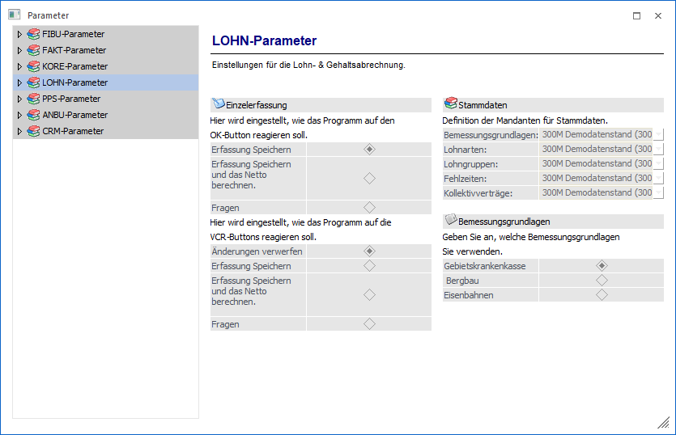

In den "LOHN-Parametern" können grundlegende Optionen für den WinLine LOHN eingestellt werden. Abhängig davon, welches Länderkennzeichen in den FIBU-Parametern eingestellt ist, können unterschiedliche LOHN-Parameter bearbeitet werden, wobei die LOHN-Parameter derzeit nur für die Länderkennzeichen Österreich und Deutschland bearbeitet werden können.
